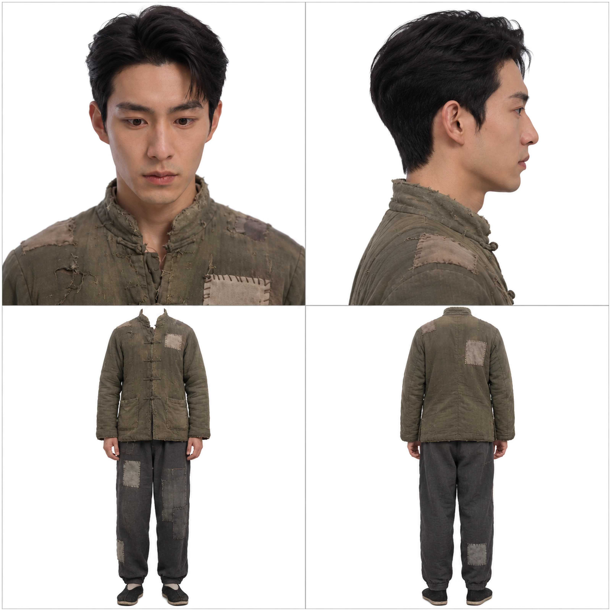
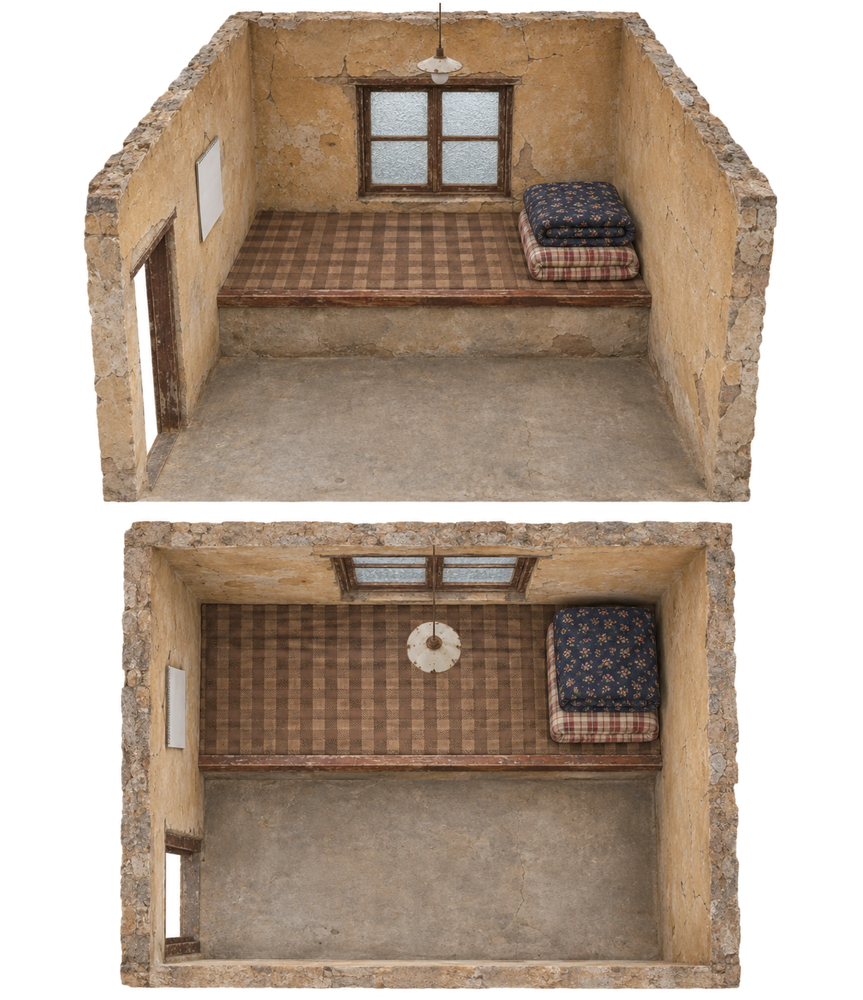
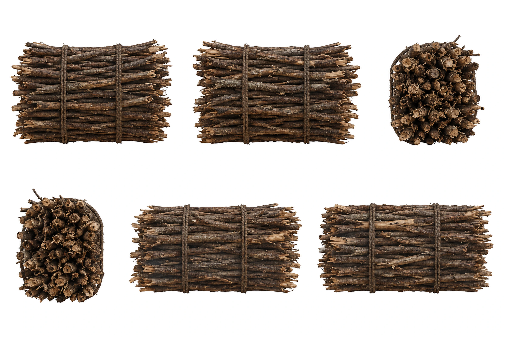
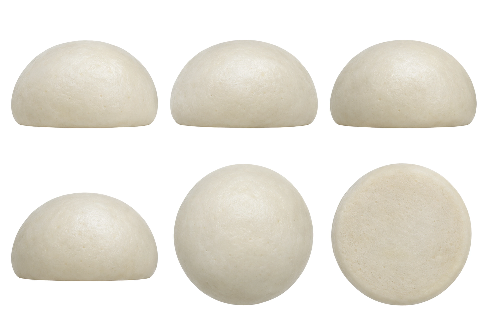
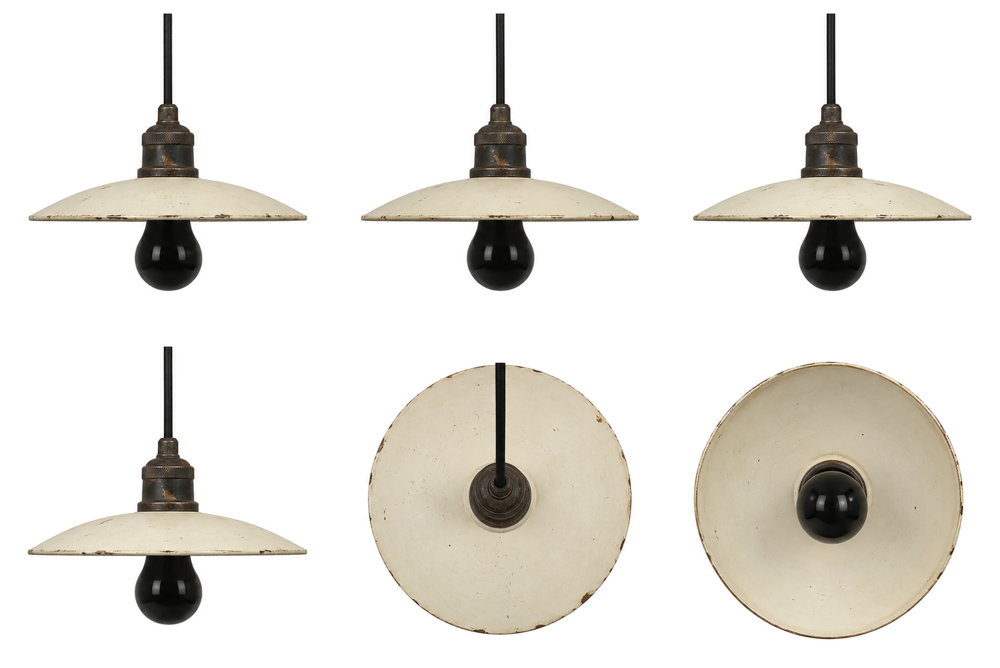

国内短剧
重活野性年代 · 第一集
正在连接在线视频…
视频简介
林姓青年在冰雪乡村醒来，通过村道背柴和门边捧馒头的记忆判断这里的生活处境。他来到白雅琴家，白雅琴发现他与印象中的模样不同，先试探后追问，两人谈话逐渐紧张。本集停在她追问他究竟想做什么。
在快手观看原视频 ↗制作资产
角色资产
白雅琴
身份与表演 乡村青年女子，见林姓青年突然清醒，先用玩笑观察他，随后提高警惕。 造型连续性 低束发，绯红挂脖衣裙。坐在窗下的炕沿，棕格或蓝色碎花棉被随段落披在肩背，两件被子按原片拆分为道具。 未完整入镜的身体背面、鞋裤按可见造型补全。

林姓青年
身份与表演 被白雅琴叫作林傻子。醒来后以自己的口吻判断村里的处境，回屋后和白雅琴当面交涉。 造型连续性 偏分短发，旧橄榄盘扣棉衣，胸口和裤腿保留粗针缝补丁。抱臂时身体略倾，受问时收住笑。 未完整入镜的身体背面、鞋裤按可见造型补全。
灰衣村民
身份与表演 山路回忆镜头里在画面左边指向林姓青年的男性村民，姓名和台词未由画面确定。 造型连续性 灰棉袄、浅边棉帽、耐脏深裤。镜头里身体略后仰，手指向山路中央。 未完整入镜的身体背面、鞋裤按可见造型补全。
深衣村民
身份与表演 山路回忆镜头里在画面右边的男性村民，与灰衣村民一道指点背柴青年。 造型连续性 深蓝冬棉衣和深色圆帽，裤脚及鞋套保持同色系。位置固定在木栏边。 未完整入镜的身体背面、鞋裤按可见造型补全。
场景资产

白雅琴家
白雅琴家的场景视觉设定，用于空间布局、光影与镜头背景。
积雪山路
积雪山路的场景视觉设定，用于空间布局、光影与镜头背景。
门口雪院
门口雪院的场景视觉设定，用于空间布局、光影与镜头背景。
道具资产
旧挂历
外观与材质 土墙上的垂页纸挂历。纸边翻起；图中去除文字和印刷人物。 镜头用途 日历插入镜头提示年代，仍挂在白雅琴家的窗旁。 上排前、后、左，下排右、俯、仰。未完整入镜的面采用造型推定。

捆扎柴垛
外观与材质 细枝条沿长轴叠放，用粗麻绳捆作方垛。 镜头用途 林姓青年在山路闪回中弯腰背负。复拍注意麻绳长度和柴捆重心。 上排前、后、左，下排右、俯、仰。未完整入镜的面采用造型推定。

白面馒头
外观与材质 一只上圆下平的白面馒头，蒸皮略有细孔。 镜头用途 门框内双手接捧的特写，表现回忆中的生活窘况。 上排前、后、左，下排右、俯、仰。未完整入镜的面采用造型推定。

棕格棉被
外观与材质 棕、米、灰格纹厚棉被，米白里布。 镜头用途 白雅琴在窗下借被挡风，双手抓住翻边，保持同一格纹朝向。 上排前、后、左，下排右、俯、仰。未完整入镜的面采用造型推定。
深蓝小花棉被
外观与材质 深蓝底细碎浅色花、加厚夹棉。 镜头用途 交谈时披在白雅琴身后，镜头跳切前后保持折叠和露边。 上排前、后、左，下排右、俯、仰。未完整入镜的面采用造型推定。

浅罩吊灯
外观与材质 米色浅圆金属灯罩，短黑垂线和暗色灯泡。 镜头用途 炕头双人中景上方的固定物，灯光布置以上方环境反射和窗光为主。 上排前、后、左，下排右、俯、仰。未完整入镜的面采用造型推定。
剧本与分镜
完整剧本与分镜脚本
国内短剧 · 第一集 原片时长 106.88 秒 故事梗概 林姓青年在冰雪乡村醒来，通过村道背柴和门边捧馒头的记忆判断这里的生活处境。他来到白雅琴家，白雅琴发现他与印象中的模样不同，先试探后追问，两人谈话逐渐紧张。本集停在她追问他究竟想做什么。 人物 白雅琴在家中等待并试探；林姓青年先辨认环境、再主动交涉；两名无名村民用于山路的回忆段落。 场景 白雅琴家以窗、炕面和灯为定位。积雪山路以辙迹、冷杉、木栏定位。门口雪院用旧门框建立窘迫的记忆及进屋转场。 道具用途 挂历提示年代；柴垛和馒头负责闪回中的劳动与吃食细节；两床棉被及浅罩灯建立炕边的动作与空间。 剧本与分镜 根据成片抽帧重建。引号内为画面可辨字幕，其他对白与音效为复拍稿补写。时长按本版镜头分配。 | 镜号 | 画面内容 | 镜头视角 | 使用资产 | 动作描述 | 台词/旁白 | 音效 | 单镜头时长 | | 01 | 白雅琴的侧脸在窗光中转过来 | 侧前方近景 | 白雅琴、白雅琴家 | 她听见动静，压低视线后回头 | — | 窗外风、布料轻擦 | 4.00秒 | | 02 | 土墙上的老挂历 | 插入特写 | 旧挂历、白雅琴家 | 风掀起下缘一角，镜头停在纸层 | — | 薄纸响 | 4.00秒 | | 03 | 窗下白雅琴与床沿 | 炕边低机位中景 | 白雅琴、白雅琴家 | 白雅琴坐稳，隔着床沿观察来人 | — | 短促环境底音 | 5.00秒 | | 04 | 青年仰卧在带雪地面 | 近似俯拍中近景 | 林姓青年、门口雪院 | 青年突然睁眼，视线缓慢聚焦 | — | 呼吸、衣料摩擦 | 5.00秒 | | 05 | 白雅琴拢住棕格被 | 窗对面正中近景 | 白雅琴、棕格棉被 | 她双手抓住被沿，朝对面抬眼 | — | 被面摩擦 | 5.00秒 | | 06 | 青年意识到周遭不同 | 脸部正面近景 | 林姓青年 | 青年低头看衣服，停顿后抬眼 | 青年内心“穷苦年代小山村” | 过渡低音 | 5.00秒 | | 07 | 村民在雪路上指点背柴青年 | 山路纵深全景 | 灰衣村民、深衣村民、林姓青年、捆扎柴垛、积雪山路 | 青年背柴经过，两人伸手指点 | 青年内心“原生不傻” | 踩雪、柴枝挤压 | 4.00秒 | | 08 | 门框之间捧着馒头 | 门框内中近景 | 林姓青年、白面馒头、门口雪院 | 青年把馒头抬到面前，紧盯食物 | 青年内心“工分被人顶” | 门外风声 | 4.00秒 | | 09 | 木门被推开 | 手部插入接正面中景 | 林姓青年、门口雪院、白雅琴家 | 手碰粗木门板，青年站进房间 | — | 门轴轻响 | 6.00秒 | | 10 | 白雅琴裹着蓝花被防备 | 过肩反打 | 白雅琴、深蓝小花棉被 | 她收住上半身动作，握紧被边 | 白雅琴：你先进来做什么？ | 室内底音 | 6.00秒 | | 11 | 窗前一站一坐 | 侧面关系中景 | 白雅琴、林姓青年、白雅琴家、浅罩吊灯 | 青年站在炕沿前抱臂，白雅琴抬头打量 | — | 吊灯轻晃，衣袖窸窣 | 6.00秒 | | 12 | 青年占住话头 | 正面中近景 | 林姓青年、白雅琴家 | 青年稍偏头，带点笑意地说清自己来意 | 青年：咱们先把话说清楚。 | 环境底音 | 8.00秒 | | 13 | 白雅琴试探又观察 | 暖窗背光反打 | 白雅琴、棕格棉被 | 她先露笑，再收紧被边，等他回答 | 白雅琴：你这会儿倒像什么都明白。 | 窗外轻风 | 12.00秒 | | 14 | 青年听完后正色 | 脸部近景转到抱臂中景 | 林姓青年、白雅琴 | 他略抬下巴，观察对方表情 | 青年：我记得刚才的事。 | 短暂停顿 | 11.00秒 | | 15 | 谈话转为交锋 | 交替过肩近景 | 白雅琴、林姓青年、棕格棉被、白雅琴家 | 白雅琴垂眼调整被沿，青年站稳等答复 | 白雅琴：你先给我说说你的打算。 | 布料轻响 | 10.00秒 | | 16 | 青年忍住笑继续说 | 平视面部近景 | 林姓青年 | 青年抬起视线，若无其事接了一句 | 青年：那你先听我把话讲完。 | 室内安静 | 7.00秒 | | 17 | 白雅琴忍不住追问 | 正面近景 | 白雅琴、白雅琴家 | 白雅琴猛地抬头，质问后切断 | 白雅琴“林傻子你到底想怎样” | 末尾硬切 | 4.88秒 | 时长合计 106.88 秒